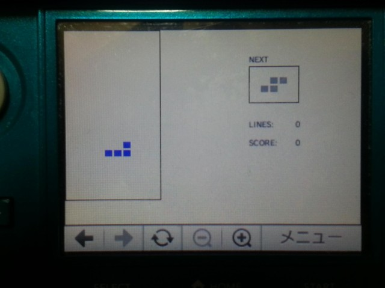
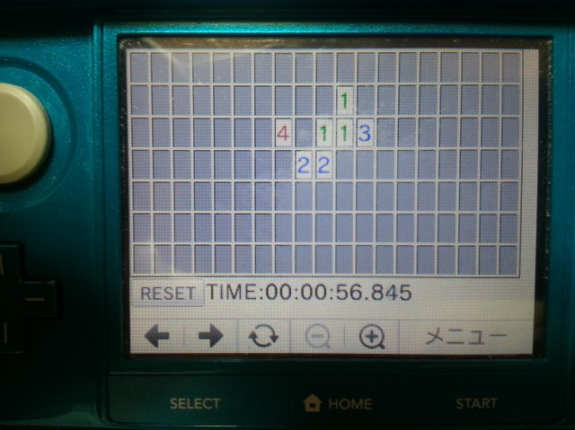

ひとりごと
３ＤＳで遊ぶブラウザーゲーム
～３ＤＳブラウザゲームの魅力～
ニンテンド－３ＤＳには、インターネットブラウザーが内蔵されているため、ＷＥＢサイトを閲覧することができます。
Ｗｅｂサイトでは、Javascriptというプログラムによって、動きがある演出や情報を見たりするのに便利な動きを実現できます。
Javascriptはプログラムであるため、プログラムの組み方次第でゲームを作ることも可能です。
つまり、インターネットに繋ぐだけで、タダでゲームが遊べてしまうというわけです。

３ＤＳでプレイする

３ＤＳでプレイする
インターネット上には、私以外にも３ＤＳで遊べるページを作っている方がたくさんいます。
この辺とか
～所詮ＷＥＢブラウザ～
しかし、残念なことに、３ＤＳブラウザーのJavascriptの動作は遅く、ゲーム好きな人が満足するような素早い動きや複雑なゲームはできませんでした。
いや、私が単に未熟なだけかもしれません。
また、単なるＷＥＢブラウザなので、効果音や音楽は出ません。
～ゲーム機で動くゲームが作れます～
しかし、プログラムを作ることができる人なら、
比較的簡単にゲーム機で遊べるゲームが作れるので、
そういう人にはオススメです。

画面の大きさは、ニンテンドー3DSの約1.9倍
3D表示などの機能はそのまま、いつものゲームをより大画面で楽しみたい方のために、
ニンテンドー3DSシリーズのサイズバリエーションとして新しく加わりました。
バッテリーがより長持ちに。

新しいWebページの潮流「HTML5」「CSS3」と、Webプログラミングのスタンダードである「JavaScript」を利用して、Webページで楽しめるゲーム作りに挑戦！
「HTMLがまったくわからない」という初心者でも、ゲームを作って世界中の人々に遊んでもらうことができるのです！
従来のシリーズ同様に楽しいイラストをふんだんに交え、専門用語には読み方を付けるなど、あらゆる人々がゼロから始めるのに最適な書籍です！